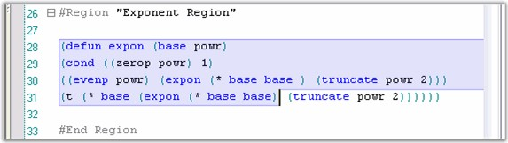
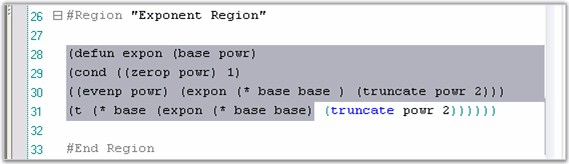

The Edit Control supports text selection operations through the use of the APIs discussed in this section.
Selecting Text
Edit Control provides support to select text programmatically. The StartSelection and StopSelection methods are used to programmatically specify the starting and ending bounds for the text to be selected.
|
Edit Control Method |
Description |
|
StartSelection |
Sets selection start at the specified position in text. |
|
StopSelection |
Sets selection end at the specified position in text. |
|
SetSelection |
Sets selected area of the text. |
|
SelectLine |
Selects line with specified index. |
|
SelectAll |
Selects all text. |
Line selection in Edit Control is extended by using the
ExtendSelectionToFarRight property.
|
Edit Control Property |
Description |
|
ExtendSelectionToFarRight |
Gets / sets value indicating whether line selection should be extended to the far right. |
|
[C#]
// Specifies start position for selecting text. this.editControl1.StartSelection(1, 1);
// Specifies end position for selecting text. this.editControl1.StopSelection(10, 1);
// Selects line with specified index. this.editControl1.SelectLine(5);
// Extend line selection to far right. this.editControl1.ExtendSelectionToFarRight = true; |
|
[VB.NET]
' Specifies start position for selecting text. Me.editControl1.StartSelection(1, 1)
' Specifies end position for selecting text. Me.editControl1.StopSelection(5, 1)
' Selects line with specified index. Me.editControl1.SelectLine(5)
' Extend line selection to far right. Me.editControl1.ExtendSelectionToFarRight = True |
Text can also be selected after drag / drop operations by using the below given property.
|
Edit Control Property |
Description |
|
SelectTextAfterDragDrop |
Specifies whether text should be selected after drag / drop operations. |
|
[C#]
this.editControl1.SelectTextAfterDragDrop = true; |
|
[VB.NET]
Me.editControl1.SelectTextAfterDragDrop = True |
Selected Text
The following properties can be used to get / set selected text.
|
Edit Control Property |
Description |
|
SelectedText |
Gets / sets selected text. |
|
Selection |
Gets selected text range. |
|
[C#]
// Returns the currently selected text in the Edit Control. string editText = this.editControl1.SelectedText; |
|
[VB.NET]
' Returns the currently selected text in the Edit Control. Dim editText as String = Me.editControl1.SelectedText |
Transparent Selection
Setting the TransparentSelection property to True, will highlight the selected text range with a transparent blue background (which will let you view the syntax highlighting in the text within the selected region), as shown in the following screenshot.

Figure 41: Transparent Selection Enabled
Setting the TransparentSelection property to False, will highlight the selected text range with a dark background (which will not let you view the syntax highlighting in the text within the selected region), as shown in the following screenshot.

Figure 42: Transparent Selection Disabled
Cancelling / Resetting Selection
Text selection can be either cancelled or reset by using the below given methods.
|
Edit Control Method |
Description |
|
SelectionCancel |
Removes selection and causes invalidation of the area that was selected. |
|
ResetSelection |
Resets selection. |
|
[C#]
// Removes selection from text. this.editControl1.SelectionCancel();
// Resets selection. this.editControl1.ResetSelection(); |
|
[VB.NET]
' Removes selection from text. Me.editControl1.SelectionCancel()
' Resets selection. Me.editControl1.ResetSelection() |